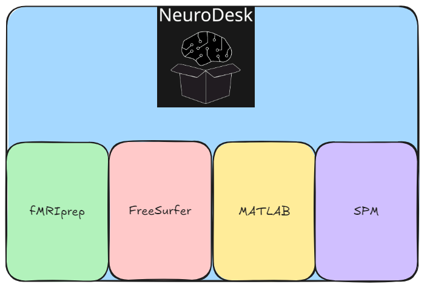
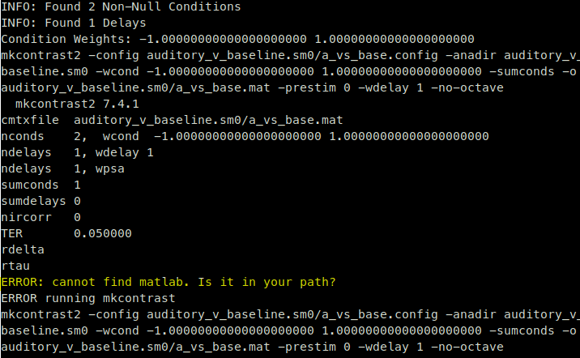
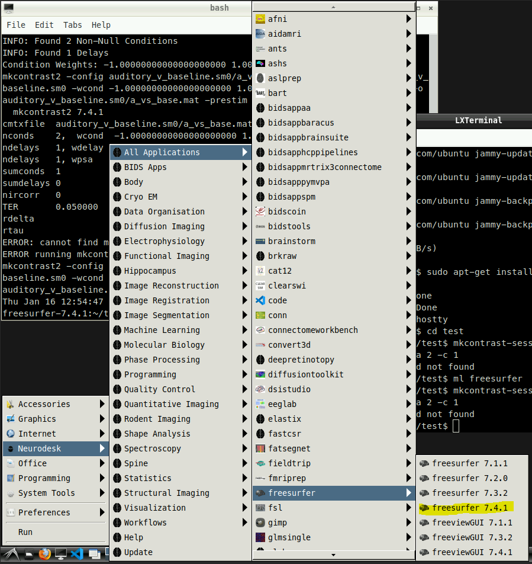

FreeSurfer FSFAST
The FSFAST glm can be run instead of using fitlins
Link to FreeSurfers FSFAST tutorial
Reasons to use FreeSurfers FSFAST
If fitlins does not have a particular option for you that you would like to use i.e. different
Potentially easier when working with surface space data (FSFAST was originally designed for surface space data)
Neurodesk
What does a container mean
Neurodesk has a whole host of software that is available for us to use
Neurodesk works in which each piece of software has its own container
Simply put for us this means that we use 1 piece of software that is contained inside its own environment

So for the example above if you were inside of the FreeSurfer container the only available software to you would be FreeSurfer
MATLAB, fMRIprep and SPM would not be available to you
However, FreeSurfer uses something called a MATLAB runtime environment
MATLAB runtime environment is smaller piece of software that is inside the FreeSurfer container
FreeSurfer commands can be run without the whole of MATLAB directly and instead use this “MATLAB runtime environment”
FreeSurfer commands that do rely on the MATLAB runtime environment
- Sometimes when running FreeSurfer commands on neurodesk you might run into an error like so:

What this means is the following:
FreeSurfer by default is looking for a whole MATLAB installation
FreeSurfer does not know whether there is a MATLAB runtime environment
This is because the MATLAB runtime environment is installed in a folder somewhere
Steps to run FreeSurfer commands
1. Start a FreeSurfer container:

2. Set up your environment variables:
- When using FreeSurfer it’s important to tell FreeSurfer where to find the subjects directory (SUBJECTS_DIR)
(see FreeSurfers FSFAST tutorial for more information)
For example:
export SUBJECTS_DIR=$TUTORIAL_DATA/buckner_data/tutorial_subjs
3. Change directory to where your data is:
For example:
cd data
4. Try and run the command first:
For example:
Freeview ← this doesn’t rely on MATLAB so the freeview window should open
recon-all ← this doesn’t rely on MATLAB either so should work
mri_vol2vol ← this doesn’t rely on MATLAB so should also work
mkcontrast-sess ← this does rely on MATLAB runtime environment
5. What to do if your command doesn’t work?
If you run a command for example:
mkcontrast-sess -analysis auditory_v_baseline.sm0 -contrast a_vs_base -a 2 -c 1
And then see an error like so:
- This means that FreeSurfer doesn’t know where the MATLAB runtime environment is therefore run the following:
export FS_MCRROOT=/opt/MCR2019b/v97/
The command above is important to tell FreeSurfer where the MATLAB runtime environment is
6. Re-run the command again
If you fall into the error as above Figure 1 : then run the command using
-mcr 1
For example:
mkcontrast-sess -analysis auditory_v_baseline.sm0 -contrast a_vs_base -a 2 -c 1 -mcr 1